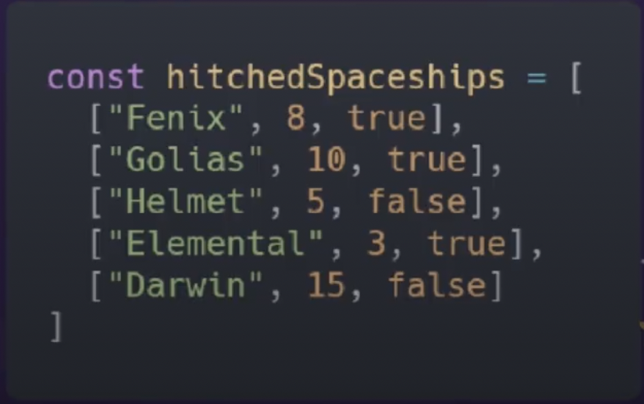

Temos abaixo, uma array bidimensional de naves que estao engatadas numa estacao espacial
Para cada sub-array, a primeira posicao é o nome da nave, a seunda é a quantidade de tripulantes e a terceira informa se o processo de engate ja foi concluido ou nao.
Nesta lista, a plataforma de engate que a nave está parada é o [indice da nave no array + 1]

Com base neste array queremos:
Filtrar o nome das naves que tem mais de 9 tripulantes
Informar o numero da plataforma em que está a primeira nave que ainda está com engate pendente
Destacar o nome de todas as naves colocando-as em caixa alta e exibindo